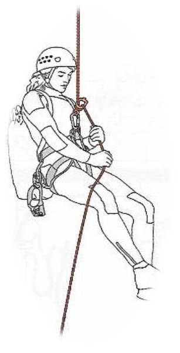
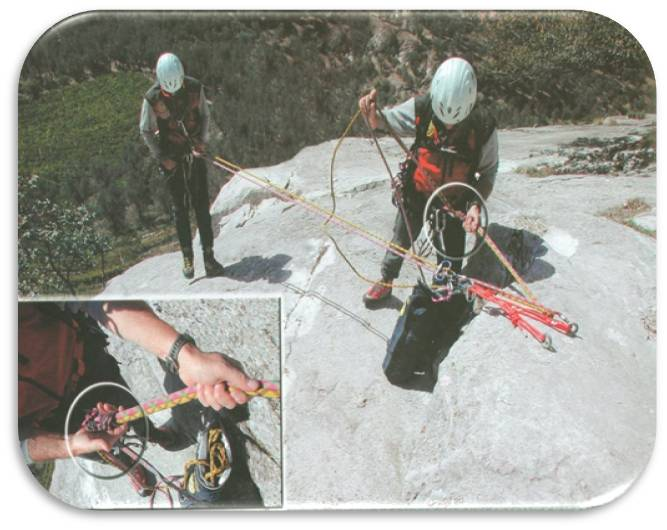

ASOCIATIA NATIONALA A SALVATORILOR MONTANI DIN ROMANIA
PROCEDURI ȘI TEHNICI DE BAZĂ ÎN SALVAREA MONTANĂ
Tehnica rapelului şi a coborârii
Rapelul
Rapelul este o tehnică de alunecare pe una sau două corzi. De-a lungul timpului s-au cunoscut mai multe variante de rapel, din ce în ce mai sigure, mai comode şi mai eficiente scopului propus.

Pregătirea pentru rapel
După ce s-au efectuat toate operaţiunile de protecţie a zonei de lucru, de amenajare a regrupării (fiind deci stabilite şi verificate punctele fixe de ancorare a corzilor de rapel), de aducere şi aranjare a materialelor de lucru şi de rapel, se poate trece la fazele care preced rapelul:
•Se leagă capetele corzilor de rapel (dacă acesta se execută pe două corzi – recuperarea lor se face prin tragere de jos). Atenţie! Să nu se lege capetele aceleiaşi corzi iar cealaltă să fie aruncată jos.
•Se introduce o coardă prin inelul punctului fix.
•Se lansează corzile – pe rând – (sau coarda) de rapel, asigurându-ne (vizualizând) că nu s-au înnodat şi au atins regruparea următoare.
•Pe coarda de rapel se montează coborâtorul sau optul (caz în care se montează şi bucla Prusik de autoasigurare).
•Coborâtorul se montează la ochiurile centurii de siguranţă şi se asigură siguranţa.
•Urmează legarea în coarda de asigurare, ţinută de secund printr-o frână (în cazul în care cel care face rapelul este asigurat de sus, din regrupare).
•Rapelul se face prin păşire succesivă.
•Poziţia corpului în rapel este lăsată pe spate, cu faţa la perete, privirea este îndreptată în jos, alegând locul de păşire.
•Picioarele desfăcute în „V”.
•Un braţ va ţine corzile de deasupra sistemului de frânare iar al doilea braţ va ţine corzile care ies din sistemul de frânare, aproximativ în dreptul bazinului
•Se face o ultimă verificare a tuturor echipamentelor şi materialelor necesare şi se aranjează într-o anumită ordine.
Se desface autoasigurarea şi se începe rapelul.
Oprirea în rapel
•Se poate face în două feluri:
•Coarda din spate se trece peste piciorul din dreptul mâinii formându-se trei bucle strânse pe pulpă.
•Se aduce coarda din spate deasupra sistemului de frânare şi se face un nod opt simplu cu buclă.
- În ambele cazuri salvatorul montan rămâne oprit în rapel (fig.96).

Blocarea cu trei bucle peste picior.
Blocarea cu nodul opt simplu cu buclă. Sau cu nodul de blocare sub tensiune
Fig. 96
Coborârea (Lansarea)
În operaţiunile de salvare se foloseşte foarte des tehnica de lansare(tehnica lansării) a salvatorului pe perete, asigurat de sus. Această tehnică dă posibilitatea celui care coboară să aibă mâinile libere, putând astfel să lucreze cu ele.
Atenţie! Acest procedeu nu este indicat în cazul în care zgomotele din zonă împiedică recepţionarea mesajelor dintre cei doi salvatori montani (cel care coboară şi cel care asigură).
Asigurarea celui care coboară se va face prin nodul semicabestan sau cu ajutorul unui dispozitiv de frânare. Pentru siguranţă în coborâre, se va asigura lansarea cu nodul Prusik sau Belluneze Fig 54
Acest procedeu se poate executa pe corzi cu diametrul de minim 10,5 mm. şi cu rezistenţa de peste 20 KN.



Rapelul pe opt
Nodul „opt de coborâre” a fost conceput pentru rapelul executat pe trasee de alpinism.
Asigurarea cu coarda de sus sau cu buclă Prusik este obligatorie pentru orice situaţie.


1.Rapelul Dülfer (fig. 97)
Acest rapel trebuie cunoscut de către toţi salvatorii montani, deoarece nu necesită nici o buclă, carabinieră sau centură pentru a-l folosi. Este totuşi un procedeu la care e bine să nu se ajungă, dar care, datorită imprudenţei, poate fi necesar a-l aplica. Corzile se introduc între picioare, se trec pe sub pulpa piciorul stâng, diagonal peste piept, pe umărul drept şi prin spate la mâna stângă.
Rapelul pe coborâtorul autoblocant
Condiţia cu care acest procedeu poate fi pus în practică este ca respectivul echipament să fie în perfectă stare de funcţionare. Procurarea şi întreţinerea acestuia fiind dificilă, procedeul nu este recomandat, cu atât mai mult dacă echipamentul este confecţionat artizanal.